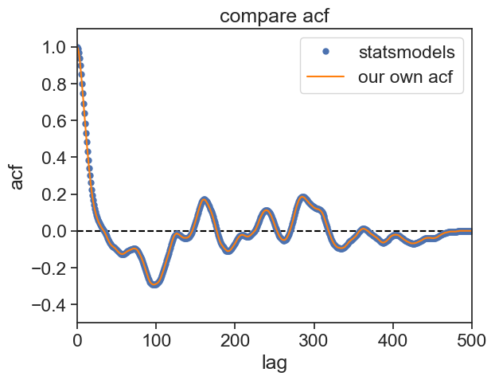

We will now see what is the connection between stationarity and autocorrelation.
Using Python’s statsmodels package, let’s create an AR time series and plot it.
import stuff
import numpy as npimport matplotlib.pyplot as pltimport matplotlib.gridspec as gridspecimport pandas as pdimport seaborn as snssns.set_theme(style="ticks", font_scale=1.5) # white graphs, with large and legible lettersimport statsmodels.api as smfrom statsmodels.tsa.arima_process import ArmaProcess
Notice that the ACF always starts at 1 for zero lag, and it gets closer to zero as the lag increases.
Intuitive interpretation: Two measurements taken within a short time interval (lag) should be similar, therefore their correlation is expected to be high. As we compare measurements from increasing time intervals, they are less and less similar to one another, therefore their correlation goes down.
Mathematical interpretation: Take a look at the code we wrote above. As the lags grows, the length of both arrays keeps shrinking, but we still divide the result by N. The logical conclusion is that when \tau=N the ACF will be exactly zero.
The statsmodels package also offers an easy way to plot the ACF, let’s compare our calculation with the built-in function:
plot
fig, ax = plt.subplots()ax.plot([0, N], [0]*2, color="black", ls="--")sm.graphics.tsa.plot_acf(ar2_values, lags=N-1, # acf returns an array of length N-1 ax=ax, label="statsmodels", alpha=None, # no confidence interval use_vlines=False)ax.plot(lags, acf, color="tab:orange", label="our own acf")ax.legend()ax.set(ylim=[-0.5, 1.1], xlim=[0, N], title="compare acf", xlabel="lag", ylabel="acf");

Excellent! From now on we will continue using statsmodels functions. We can spice up the ACF graph, by showing an envelope of 95% confidence interval.
The idea behind this confidence interval envelope is to help us understand if the observed correlation is statistically significant. The null hypothesis is that the time series is white noise. If an autocorrelation value at a specific lag falls outside the confidence interval, it suggests that the autocorrelation at that lag is statistically significant. In other words, there is evidence of correlation at that lag. If an autocorrelation value is within the confidence interval, it suggests that the autocorrelation at that lag is not statistically significant, and any observed correlation might be due to random noise. The width of the confidence interval is influenced by the significance level. For a 95% confidence interval, it means that you are 95% confident that the true autocorrelation lies within the interval. If you choose a higher confidence level, the interval will become wider, making it harder to reject the null hypothesis of no correlation.
The shape of the envelope is given by:
z_{\alpha/2}\cdot \text{StdErr}(\rho_{XX}(\tau)),
where z_{\alpha/2} is the critical value of the normal distribution at \alpha/2 level of significance. For example, for a 95% confidence interval, \alpha=0.05, and z_{\alpha/2}=1.96. z_{\alpha/2} is the distance from the mean such that the area under the curve for each tail is \alpha/2 of the total area.
\text{StdErr}(\rho_{XX}(\tau)) is the standard error of the ACF at lag \tau, given by Bartlett’s Formula:
where k is the index of the lag \tau. If the time series is white noise, \rho^2 will be zero for all lags except for \tau=0, therefore Bartlett’s Formula becomes simply 1/\sqrt{N}, and the confidence interval will be a horizontal envelope.
30.1.1 problem?
There is something a bit troubling about the ACF graph. We can learn from it how fast the correlation between two points in time falls, but this analysis is not too clean. Assume that the present state x_t is only dependent on one time step back, x_{t-1}. Because x_{t-1} is dependent on x_{t-2}, the result is that we will find that x_{t} is weakly dependent on x_{t-2}, although the direct dependence is zero.
The Partial ACF (PACF) solves this problem. It removes the intermediate effects between two points, and returns only the direct influence of one time instant on another one lagged by \tau. Let’s see how it looks like for the proceess above.
We see three bars significantly far from the confidence interval. The leftmost shows \text{PACF}(\tau=0)=1, which is expected, so let’s not discuss it. The two next bars are the really important ones, they show the greatest correlation. From then on, the correlation for lags greater than 2 is not significant. With PACF’s help, we can infer that the original AR processes must have been of order 2.